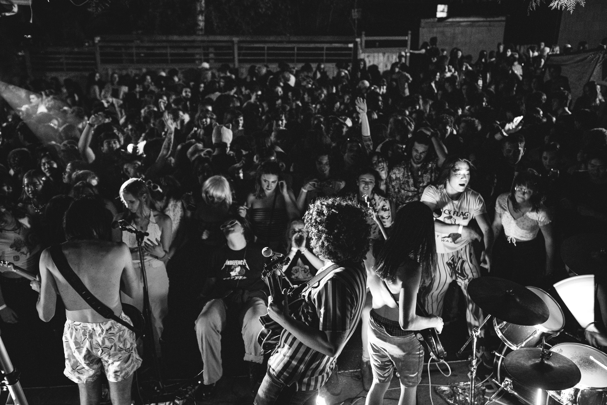

About
Moms With Bangs are a bay area quintet exploring garage, surf, and psychedelia all within their unique style of punk rock. Formed in 2021 from the trio Peach Fuzz, and adding a second guitarist and synth player, the moms have been a fiery and joyous force in the bay area punk scene of the 2020s. Some members played in Saving Rain in the late 2010s, which had other members form into Insoms. Their first album, Jazzercised, is released April 21st, 2022. Leo Hirsch sings and plays guitar, Austin Kennedy plays lead guitar, Michael Cook plays bass, Axel Sanchez plays synth, and Will Roth drums. In 2023, Moms with Bangs signed to Alternative Tentacles Records.
The Band

Leo

Michael

Axel

Austin

Oliver
Gallery